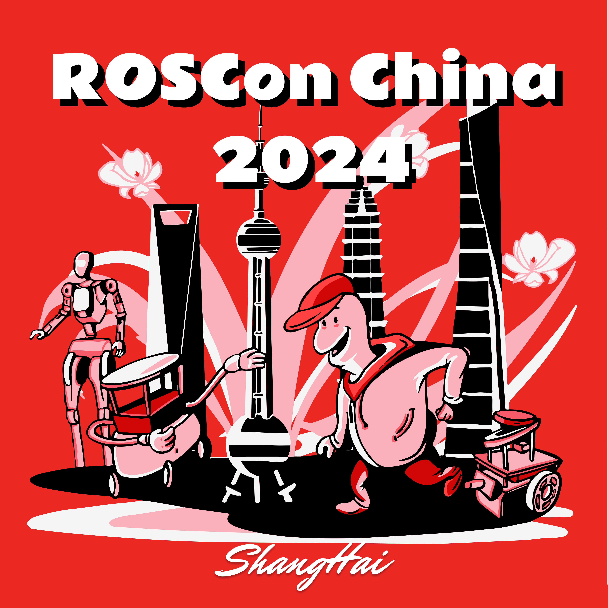

ROSCon China 2024
Shenzhen, China
November 2nd to 3rd, 2024

ROSCon China is organized by China Robotics Education Foundation in collaboration with the global ROSCon event organized by the Open Source Robotics Foundation. ROSCon China 2024 will empower the robotics community within and outside the country by bringing together industry experts, researchers and enthusiasts from the Robotics and ROS community. ROSCon China 2024 offers a valuable opportunity for ROS and robotics developers at all levels—from beginners to experts, learning about the latest technology in ROS, interacting with the ROS community and sharing ideas with fellow developers.
ROSCon China 2024 will be the first local ROSCon in China and will be held in Shenzhen from November 2nd to 3rd. ROSCon China 2024 will be hosted by GuYueHome and Shenzhen Innoxsz. Similar to the global ROSCon, the two-day program will include technical talks and tutorials that introduce new tools, libraries and novel applications. The main program will consist of 10 to 30-minute presentations, lightning talks, demonstrations, and workshops.
We encourage robotics developers and students to attend ROSCon China 2024. If you have any questions, concerns, or ideas, please contact the executive committee.
We also welcome suggestions for how to encourage more participation. If you have ideas to share, please contact us.
Dates
Key Dates
Call for Proposals circulated
June 1, 2024
Workshop submission deadline
September 1, 2024
Proposal submission deadline
September 1, 2024
Sponsors
Sponsor ROSCon China 2024!
We are now accepting sponsorship for ROSCon China 2024! Full details regarding our 2024 sponsorship benefits will be listed very soon. We generally follow the style outlined in the ROSCon sponsorship prospectus. We recommend that you claim your spot as soon as possible, booth space and sponsorship add-ons for ROSCon China 2024 are very limited. If you have questions or concerns, please contact the executive committee.
attend
Event Location
ROSCon China 2024 will be held in Shenzhen Innoxsz.
Click to navigate to this location.
CFP
ROSCon China 2024 is the chance for ROS developers of all levels, beginner to expert. We’re calling for your contributions! We’re looking for proposals for three different types of content:
- Talks: The standard presentation format is the talk, with the presenter(s) talking live about a specific topic, with a brief question period at the end, fitting into a 10, 20 or 30 minute time slot.
- Workshops: We will offer workshops. The goal of the workshops is to provide space for participatory/interactive experiences between the presenter(s) and the attendees and the chance to go more in depth into a subject than a regular talk could allow.
We are also planning keynote speakers and of course, lightning talks. The conference program will be a combination of single-track and double-track sessions.
Please note that, ROSCon China 2024 will be fully in-person, and remote presentations will not be considered. The official language is Chinese and but other language (such as English) is welcome.
General Content Guidelines:
All topics related to ROS (1 & 2) are invited. Example topics include:
- New packages / frameworks
- Insights / improvements for existing packages
- Case studies on unique ROS deployments / use cases
- Developments for specific robots, sensors, platforms
- Competitions / collaborations / initiatives
- ROS in commercial / research / teaching environments
- Standards / best practices / development tools
- Novel applications combing ROS and LLM
To get an idea of the content and tone of ROSCon China 2024, check out the slides and videos from previous global ROSCon. If there is a topic on which you would like to present, please propose it.
Review Criteria
All submissions will be reviewed by the program committee to evaluate:
- Relevance to the ROS Community - The proposed content should use ROS in a substantial way, but beyond that, the work must also be relevant and compelling to a general ROS audience. Writing a ROS driver for a specific piece of hardware is an excellent contribution to the community, but describing the intricacies of its firmware may not be relevant to this audience. Furthermore, content should be relevant to a global and diverse community.
- Quality of Content/Impact - We encourage proposals to contain big ideas with high impact. Proposals should have a demonstrable quality as opposed to being purely theoretical.
- Quality of Presentation - Articulating your ideas clearly and grammatically is a key prerequisite for giving a compelling live presentation.
- Originality/Novelty - Content should be original and not something that has already been heard before. Will this be the 41st talk on a particular topic at ROSCon? Or are you presenting something new?
- Open Source Availability - Because we are an open-source community, proposals for which the underlying code and other content is available under an open source license have a greater chance of being accepted. It is not a hard requirement, but proposals focused on proprietary systems should contribute in some other way to the community. Promises of future release are difficult to evaluate, so having your content released at the time of proposal submission is preferred.
Additional consideration will be given to balancing the subject matter and duration of presentation.
We encourage proposals from presenters of all backgrounds and experience levels.
Workshop Submission Information
Workshop proposals must include:
- Title (maximum 70 characters)
- Presenter(s) (name, contact information)
- Summary - for public consumption, used in the program schedule (maximum 100 words)
- Description - outline the workshop and its goals, for review by the program committee.
Describe the intended audience and what resources (if any) would be required. Please be sure to include enough information in your proposal for the program committee to evaluate the above review criteria. Submit these files on this website. If you have any questions/comments/firmware patches, please contact the executive committee
Talk Submission Information
Talk proposals must include:
- Title (maximum 70 characters)
- Presenter(s) (name and affiliation)
- Desired talk length (10, 20 or 30 minute time slot.)
- Summary - for public consumption, used in the program schedule (maximum 100 words)
- Description - outline and goals, for review by the program committee. Describe the intended audience and what they can expect to learn. Please be sure to include enough information in your proposal for the program committee to evaluate the above review criteria.
- Audio abstract - All talk proposals must include a (maximum) one minute recording of the presenter describing the content of the talk. It should be a single-take, responding as if a colleague asked what the talk was about. Please use either the mp3 or ogg file format. Used only for review by the Program Committee (not made public).
- Key URL handles - Optionally include a single link handles to be associated with talk in publicity materials.
Submit these files on this website. If you have any questions/comments/firmware patches, please contact the executive committee
Lightning Talks
Lightning talk session offers attendees an opportunity to make a short presentation of 2-3 minutes. If you do not wish to make a formal presentation, you can present your project or idea in the form of a Lightning talk.
If you are interested in giving a lightning talk, submit these files on this website. If you have any questions/comments/firmware patches, please contact the executive committee
Organizers
General Chair
Xinyu Zhang (ROS China Education Foundation)
Code of Conduct
All attendees, speakers, sponsors and volunteers at our conference are required to agree with the following code of conduct. Organisers will enforce this code throughout the event. We expect cooperation from all participants to help ensure a safe environment for everybody.
The Quick Version
Our conference is dedicated to providing a harassment-free conference experience for everyone, regardless of gender, gender identity and expression, age, sexual orientation, disability, physical appearance, body size, race, ethnicity, religion (or lack thereof), or technology choices. We do not tolerate harassment of conference participants in any form. Sexual language and imagery is not appropriate for any conference venue, including talks, workshops, parties, Twitter and other online media. Conference participants violating these rules may be sanctioned or expelled from the conference without a refund at the discretion of the conference organizers.
The Less Quick Version
Harassment includes offensive verbal comments related to gender, gender identity and expression, age, sexual orientation, disability, physical appearance, body size, race, ethnicity, religion, technology choices, sexual images in public spaces, deliberate intimidation, stalking, following, harassing photography or recording, sustained disruption of talks or other events, inappropriate physical contact, and unwelcome sexual attention.
Participants asked to stop any harassing behavior are expected to comply immediately.
Sponsors are also subject to the anti-harassment policy. In particular, sponsors should not use sexualised images, activities, or other material. Booth staff (including volunteers) should not use sexualized clothing/uniforms/costumes, or otherwise create a sexualised environment.
If a participant engages in harassing behavior, the conference organisers may take any action they deem appropriate, including warning the offender or expulsion from the conference with no refund.
If you are being harassed, notice that someone else is being harassed, or have any other concerns, please contact a member of conference staff immediately. Conference staff can be identified as they’ll be wearing badges as well as there will be staff at the registration desk.
Conference staff will be happy to help participants contact hotel/venue security or local law enforcement, provide escorts, or otherwise assist those experiencing harassment to feel safe for the duration of the conference. We value your attendance.
We expect participants to follow these rules at conference and workshop venues and conference-related social events.
ARCHIVE
Past ROSCons
The archived ROSCon websites listed below include information about ROSCon speakers, recordings of their talks, and in some cases copies of their slide decks.
- ROSCon 2023 New Orleans, Louisiana
- ROSCon 2022 Kyoto, Japan
- ROS World 2021, Virtual
- ROS World 2020, Virtual
- ROSCon 2019 Macau
- ROSCon 2018 Madrid, Spain
- ROSCon 2017 Vancouver, Canada
- ROSCon 2016 Seoul, Korea
- ROSCon 2015 Hamburg, Germany
- ROSCon 2014 Chicago, USA
- ROSCon 2013 Stuttgart, Germany
- ROSCon 2012 St. Paul, USA
Past ROS Summer School
The following are activities funded by the ROS Education Foundation.
- ROS Summer School 2023
- ROS Summer School 2022
- ROS Summer School 2021
- ROS Summer School 2020
- ROS Summer School 2019
- ROS Summer School 2018
- ROS Summer School 2017
- ROS Summer School 2016
- ROS Summer School 2015
Information Media